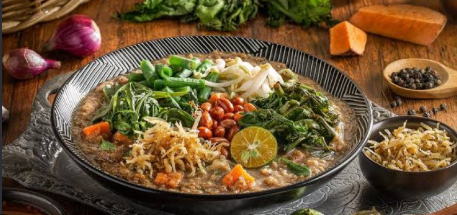

BARUBubur Pedas Spesial
Nikmati kelezatan bubur tradisional khas Kalimantan Barat yang kaya akan rempah-rempah alami, sayuran segar, dan taburan kacang serta teri goreng yang renyah.
Ngomongin soal kuliner legend, bubur pedas khas Kalbar ini emang juaranya buat nemenin jam istirahat sekolah yang bikin perut keroncongan. Bagian ini sengaja dibuat panjang biar halamannya bisa digulir santai sambil nunggu jam pelajaran berikutnya mulai. Pokoknya rasanya tuh nagih banget, apalagi disantap pas masih hangat bareng temen-temen sekelas.
Kuahnya itu lho, rich banget sama rempah-rempah alami yang bikin badan langsung hangat pas cuaca lagi mendung atau pas mood lagi down seharian. Bagian ini juga bikin halamannya makin seru buat di-scroll sambil nikmatin vibes santai sore hari. Dijamin deh, sekali coba langsung masuk list makanan favorit versi anak sekolahan.
Belum lagi isian sayurannya yang komplit dan segar, bikin menu ini nggak cuma enak tapi juga asyik buat nambah energi pas ngerjain tugas sekolah yang numpuk. Paragraf ini sengaja dibuat agak panjang biar pas di-scroll kerasa pas ritmenya, mirip kayak lagi nyusun project web yang butuh ketelitian tapi tetap santai.
Taburan kacang goreng sama teri renyah di atasnya bener-bener nge-level-up teksturnya jadi ada sensasi kriuk-kriuk yang seru waktu dikunyah. Bagian teks panjang ini juga ngebantu banget buat ngetes seberapa smooth halaman web-nya pas digulir dari atas sampe kebawah tanpa ngadat.
Kalau ngobrolin soal jajanan tradisional, bubur pedas ini bener-bener bukti nyata kalau kuliner lokal tuh nggak kalah keren sama makanan hits kekinian. Tulisan panjang ini sengaja ditulis dengan gaya bahasa tongkrongan anak SMA biar bacanya nggak bosen, malah seru buat nemenin waktu gabut di kelas pas jam kosong.
Sensasi rasa pedes, gurih, dan wangi khas daun-daunannya bener-bener nendang banget di lidah dari suapan pertama sampai suapan terakhir. Bagian teks ini juga dipasang biar tata letak halamannya keliatan proporsional dan tombol navigasinya tetap stay di pojok layar pas digulir.
Pokoknya, buat kalian anak-anak hits yang doyan berburu kuliner nusantara wajib banget cobain semangkuk bubur pedas ini buat ngilangin rasa lapar seketika. Paragraf terakhir ini nutup sesi baca-baca kita dengan santai, sebelum akhirnya kalian bisa klik tombol kembali ke beranda buat explore menu seru lainnya.